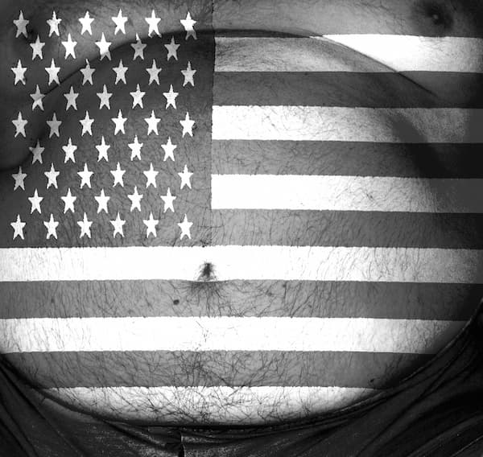

Dacă i-ai spune unui tânăr că America reprezintă și altceva decât Hollywood, Elvis, Michael Jackson, bluejeans, Coca-Cola, muzică, automobile, zgârie-nori, ar ridica din umeri. Orice ar fi, Statele Unite ale Americii înseamnă în primul rând pentru cei mai mulți, tineri sau mai puțini tineri, un model al libertății, al democrației, tentația unui nivel de trai ce pare coborât direct de pe ecranele hollywoodiene. Orice se întâmplă în lume se raportează la țara care l-a avut ca prim președinte pe George Washington, culmea, un adept al izolaționismului. Până și eterata Uniune Europeană a apărut tot ca un fel de replică la federația care a dominat lumea occidentală de după cel de al doilea război mondial, iar în momentul de față se pretinde hegemon al universului. Atât de mult s-a impus în subconștientul colectiv că America (prin aceasta înțelegându-se mai întotdeauna Statele Unite) reprezintă modelul, dovada irefutabilă a oricărei argumentații, încât dacă îi atragi cuiva atenția că s-a greșit într-o chestiune, îți va replica senin: și în America este la fel! Nimeni nu analizează fondul problemei conform unei scări axiologice încă valabilă în lume - dacă nu creștine, măcar morală - ci mai toți se raportează la: se practică și în „State” ori, mai nou, și în „Uniune”!
Evoluția Americii între bombele de la Hiroșima și Nagasachi, justificate cu argumente militare, ca și intervențiile eșuate din Coreea și Vietnam, de cei care au scris istoria după ‘45, până la momentele bombardamentelor din Serbia, cruciada petrolieră din Irak și inchizitorialul Guantanamo, obstinația cu care se caută a se împărți istoria modernă a lumii în înainte și după 11 septembrie 2001, nu par să spulbere încă mitul unei țări care rămâne pentru cei mai mulți o atracție irezistibilă, un veritabil paradis terestru. Transformarea țării, care te întâmpină în portul „Liberty Island” din New York cu statuia Libertății, într-un stat polițienesc, robotizarea americanului de rând până la a-l transforma într-un consumator de produse (cele mai multe dintre ele fabricate pe vapoare sau în țări manufacturiere, de calitate execrabilă), interzicerea simbolurilor religioase, definirea sărbătorilor creștine ca fiind momente fun pentru că evreii nu cred în Hristos și (vezi, Doamne!) nici budiștii sau alte confesiuni, deci ar fi incorect politic și discriminatoriu să te manifești în vreun fel.
De ani buni, America, așa zisa campioană a democrației, nu mai are nimic în comun cu America care își declara independența pe data de 4 iulie 1776 față de perfidul Albion. Nu are și nici nu a avut ceva în comun cu America la care au visat bunicii noștri căzuți sub jugul bolșevismului. Faptul că așteptarea lor abil întreținută de serviciile secrete ale unui stat pragmatic i-a costat de cele mai multe ori viața, în cel mai bun caz tinerețea pierdută prin temnițele comuniste, reprezintă desigur un aspect minor sau de-a dreptul inexistent al istoriei. America de astăzi proslăvește, este drept, libertatea, dar libertatea de expresie a homosexualilor, pedofililor, a bisericilor demonice intitulate ca atare sau camuflate sub denumiri care de care mai ciudate: „scientologice”, „holiste”, „new-ageiste”.
Prin fascinația peliculei, America rămâne însă țara unde totul este posibil pentru cel care crede că are bastonul de mareșal în raniță. Reușita corporatistă nu are însă nimic în comun cu succesul căutătorului de aur sau al colonistului din primele decenii ale expansiunii spre vest.
Dinspre America culturală, rafturile librăriilor au fost umplute în ultimul timp cu producții de genul „Codul Da Vinci” și avalanșa de „Cum să reușești să fii lider”, „ Cum să îți dezvolți voința”, „Strategii de succes”, „Cum poți să pierzi din greutate în 20 de zile” sau „Cum poți fi veșnic tânăr”. Ultima capodoperă de pe listă, ochioasă și lăbărțată ciudat de rapid și pe rafturile noastre, a fost „Biografia lui Barack Obama”. țara figurilor hollywoodiene care a sedus generații la rând mai dă încă tonul în pictură, deși singurele referințe critice par să se realizeze la licitațiile unde se stabilesc întruna recorduri cu multe zerouri pentru vreo pânză mai mult sau mai puțin celebră. „S-a adjudecat!” este singurul adjectiv al milionarilor care, la fel ca altădată romanii, își doreau obiecte de artă pentru somptuoasele lor locuințe.
Desigur, nu tot poporul american este format din cretini sau oameni lipsiți de verticalitate. Sunt mulți americani care ei înșiși ar dori să emigreze într-o Americă așa cum o văd ceilalți. America în ansamblul ei este însă putredă. Putreziciunea ei a răscolit abia acum lumea întreagă cu molima unei crize pe care admirația și imitația neghioabă a unui sistem a favorizat-o. N-am fost niciodată în America și probabil că nici nu voi merge. Nu strugurii care nu pot fi atinși, fiind cumva prea sus, mă dor. Ci mitul, frumosul și fascinantul mit care ascunde urâțenia putreziciunii și a pustiirii. În fond, câți dintre noi am fi dispuși să renunțăm la un mit? Câți dintre cei care s-au convins că America este un uriaș difuzor de iluzii ca și Hollywoodul însuși, câți recunosc acesta? După mai bine de 500 de ani de la proclamata descoperire a Americii, eu cred că este vorba de o greșeală. Nu în sensul cronologiei faptelor și al numelui celui ce a descoperit-o. Nu, eu nu numai că nu am descoperit America, eu pur și simplu nu cred că America există!

Desigur, este vorba de acea Americă văzută de mulți ca un paradis terestru. De acea federație de state unite, care se pretinde a fi campioana democrației. O intervenție avizată în putreziciunea și iluzia pe care samsarii democrației de tip american o întrețin în lume, realizează cunoscutul profesor de lingvistică si analist politic, Noam Chomsky. În cartea sa numită „Intervenții”, apărută în urmă cu aproximativ un an, la editura Vellant,Chomsky oferă imaginea unui stat total diferit față de cel pe care îl oferă lumii mașina de propagandă a Statelor Unite. Evreu ca origine și cetățean american, Noam Chomsky, poate fi catalogat ca reprezentant al ideilor de stânga, dar în niciun caz antisemit sau antiamerican. Cele peste 300 de pagini ale cărții adună 44 de op-ed-uri - „opposite editorials“, specie jurnalistică asemănătoare cu editorialul -, eseuri în care sunt prezentate opinii privitoare la unele dintre cele mai fierbinți subiecte de după 11 septembrie. Dată pe care corespondenții lui Goebbels din structurile propagandistice americane o tot invocă în încercarea de a împărți istoria lumii în înainte și după 11 septembrie 2001 și de a-și legitima agresiunea în diferite părți ale lumii.
Această legitimitate și-a găsit expresia în „doctrina Bush”, care proclamă dreptul Statelor Unite de a ataca orice amenințare potențială și de a-și apăra interesele vitale, așa cum e cazul cu asigurarea resurselor ori a piețelor importante. „Puterea supremă a lumii își arogă dreptul de a purta războaie după bunul ei plac, bazându-se pe doctrina autoapărării anticipative” – arată Chomsky. După el, războiul din Irak ar fi fost declanșat nu atât pentru accesul, cât pentru impunerea prezenței SUA în centrul surselor de energie cele mai importante ale planetei, urmărind în principal preluarea controlului conductelor de petrol și gaze naturale. Istoria marilor agresori nu consemnează sau nu găsește întotdeauna justificări pentru victimele nevinovate care sunt sacrificate pentru atingerea obiectivului. În speță, ocuparea Irakului, bogat în resurse naturale. Astfel, în 2003 ar fi murit 100.000 de civili irakieni. Dar probabil că acest aspect reprezintă doar o chestiune de statistică. Dictatorul sovietic, Iosif Visarionovici Stalin, afirmase de altfel că moartea unui om este o tragedie, iar moartea unui milion de oameni o problemă de statistică. Atacarea spitalelor, în disprețul normelor internaționale și a Convenției de la Geneva, e „o eroare”, un „accident”. La fel ca (ar fi adăugat cu siguranță Chomsky, dacă ar fi cunoscut situația - cele produse pe șoselele României de către militarii americani, cu consecințe inexistente sau minore pentru autori. În plan global, autorul american dovedește că pretextul războiului, lupta contra terorismului, nu stă în picioare. În loc ca terorismul să se diminueze, acesta, dimpotrivă, a crescut în mod considerabil.
În aplicarea planului de dominare a lumii contemporane - ocazie așteptată, lucrată decenii întregi, ivită în sfârșit după prăbușirea URSS - SUA se folosește de așa numitele „regimuri marionetă”. Administrația americană, bașca serviciile ei secrete, va promova persoana sau grupul de persoane care îi vor susține politica în zonă. Orice încercare de a contesta politica americană sau de a merge pe un drum propriu este considerată drept o sfidare. Ca vecini ai Serbiei, cunoaștem acest lucru. În schimb, SUA oferă dispreț. Un loc în care aroganța și disprețul Statelor Unite se manifestă fără nici o rezervă este Consiliul ONU. Organizația care ar trebui să fie garantul păcii mondiale, a respectării drepturilor omului, a cooperării internaționale și a respectării dreptului internațional este tot un fel de marionetă a Casei Albe și a cercurilor de interese din spatele ei. Dacă Statele Unite votează într-un fel, rezoluțiile neconvenabile se resping. Un singur vot contează, 192 de voturi sunt nule.
Chomsky are argumente și atunci când afirmă că FMI, fond care a făcut o presiune teribilă ca România să solicite un împrumut de miliarde de euro, ar fi de fapt o sucursală a Departamentului de Finanțe al SUA, aceasta în timp ce toată America de Sud caută să scape de sub jugul acestei organizații financiare.
Concluzia cărții lui Noam Chomsky este că SUA sunt departe de a fi modelul idilic în mrejele căruia se aruncă, din diverse motive, mai ales tinerii care se identifică cu iluziile cinematografiei americane. Americanii nu sunt deloc diferiți de sovieticii ocupanți de altădată. Aceleași intenții agresive, același imperialism, același banc răsuflat al egalității de șanse și al unei iluzorii libertăți reprezentate de o statuie la intrarea în New-York.
Politologul american avertizează că modelul servilismului, al imitației nu este nou sub soare și că se vor găsi destui servi gata să aplaude și să dea din cap: Yes sir! Have a nice day! „Modelul de «servilism conformist» este vechi de când lumea. De aceea, cel care a fost nevoit să bea cucută a fost cel acuzat că «a corupt tineretul Atenei» cu «zei falși», iar nu cei care-i slăveau pe adevărații zei ai sistemului doctrinal. O parte însemnată a Bibliei este dedicată unor oameni care condamnau crimele de stat și practicile imorale. Ei sunt numiți «profeți». În termeni contemporani, acești «profeți» sunt «intelectuali disidenți». Nu mai este nevoie să reamintim felul în care au fost tratați: mizerabil, conform normei aplicate tuturor disidenților. Mai existau însă și intelectuali ținuți în mare stimă în această epocă a profeților: lingușitorii curții. Evangheliile ne previn că acești «falși profeți» care ni se înfățișează în haine de miei nu sunt, pe dinăuntru, decât niște lupi răpitori. Îi veți putea deosebi după faptele lor.”
Faptele arată că SUA sunt în momentul de față un antimodel, o amenințare la valorile autentice ale democrației și identității naționale a fiecărei națiuni. Moda ridicolă a sărbătorilor gen Valentine’s Day sau Ziua Recunoștinței cu păpatul ritualic al curcanului, care începe să se practice și la noi, transformarea Sfintelor Sărbători de Paște sau Crăciun într-o goană tembelă după oferte prin hipermarketuri, paradele, defilările, recepțiile și alte dulcegării grețoase ce însoțesc data de 4 iulie, găsesc ecou în rândul snobilor precum și în rândul celor care văd în manifestările și pretențiile din ce în ce mai nesățioase ale homosexualilor sau a altor categorii sexuale sau oculte, inclusiv demonice, un chip al adevăratei libertăți, excitarea supremă a omului. O excitare a simțurilor grosiere, o îndobitocire programatică, care are ca scop controlul lumii, transformarea ei într-o piață imensă de sclavi.